<ion-view hide-nav-bar="true">
   <!-- header -->
    <div class="bar bar-header bar-positive" id="map_header">
        <button class="button" ng-click="$ionicGoBack()">Back</button>
        <h1 class="title"><span ng-click="goHome()">goRilla</span></h1>
        <button class="button-icon" ng-click="gotoMessage()"></button>
    </div>

  <ion-content class="jobsearch-has-subheader normal-header ">
            <div class="content-box">
                  <h5 class="sub-title">About Gorilla</h5>
            </div>
  </ion-content>

  </ion-view>
